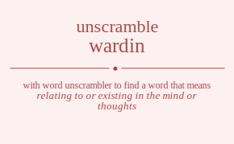

The word found after unscrambling wardin means that relating to or existing in the mind or thoughts, directed or moving inward or toward a center, toward the center or interior, to or toward the inside of, .

The word found after unscrambling wardin means that relating to or existing in the mind or thoughts, directed or moving inward or toward a center, toward the center or interior, to or toward the inside of, .
You can also find solutions for different combinations of letters in wardin like wardin wardni waridn warind warndi warnid wadrin wadrni wadirn wadinr wadnri wadnir wairdn wairnd waidrn waidnr wainrd waindr wanrdi wanrid wandri wandir wanird wanidr wradin wradni wraidn wraind wrandi wranid wrdain wrdani wrdian wrdina wrdnai wrdnia wriadn wriand wridan wridna wrinad wrinda wrnadi wrnaid wrndai wrndia wrniad wrnida wdarin wdarni wdairn wdainr wdanri wdanir wdrain wdrani wdrian wdrina wdrnai wdrnia wdiarn wdianr wdiran wdirna wdinar wdinra wdnari wdnair wdnrai wdnria wdniar wdnira wiardn wiarnd wiadrn wiadnr wianrd wiandr wiradn wirand wirdan wirdna wirnad wirnda widarn widanr widran widrna widnar widnra winard winadr winrad winrda windar windra wnardi wnarid wnadri wnadir wnaird wnaidr wnradi wnraid wnrdai wnrdia wnriad wnrida wndari wndair wndrai wndria wndiar wndira wniard wniadr wnirad wnirda wnidar wnidra awrdin awrdni awridn awrind awrndi awrnid awdrin awdrni awdirn awdinr awdnri awdnir awirdn awirnd awidrn awidnr awinrd awindr awnrdi awnrid awndri awndir awnird awnidr arwdin arwdni arwidn arwind arwndi arwnid ardwin ardwni ardiwn ardinw ardnwi ardniw ariwdn ariwnd aridwn aridnw arinwd arindw arnwdi arnwid arndwi arndiw arniwd arnidw adwrin adwrni adwirn adwinr adwnri adwnir adrwin adrwni adriwn adrinw adrnwi adrniw adiwrn adiwnr adirwn adirnw adinwr adinrw adnwri adnwir adnrwi adnriw adniwr adnirw aiwrdn aiwrnd aiwdrn aiwdnr aiwnrd aiwndr airwdn airwnd airdwn airdnw airnwd airndw aidwrn aidwnr aidrwn aidrnw aidnwr aidnrw ainwrd ainwdr ainrwd ainrdw aindwr aindrw anwrdi anwrid anwdri anwdir anwird anwidr anrwdi anrwid anrdwi anrdiw anriwd anridw andwri andwir andrwi andriw andiwr andirw aniwrd aniwdr anirwd anirdw anidwr anidrw rwadin rwadni rwaidn rwaind rwandi rwanid rwdain rwdani rwdian rwdina rwdnai rwdnia rwiadn rwiand rwidan rwidna rwinad rwinda rwnadi rwnaid rwndai rwndia rwniad rwnida rawdin rawdni rawidn rawind rawndi rawnid radwin radwni radiwn radinw radnwi radniw raiwdn raiwnd raidwn raidnw rainwd raindw ranwdi ranwid randwi randiw raniwd ranidw rdwain rdwani rdwian rdwina rdwnai rdwnia rdawin rdawni rdaiwn rdainw rdanwi rdaniw rdiwan rdiwna rdiawn rdianw rdinwa rdinaw rdnwai rdnwia rdnawi rdnaiw rdniwa rdniaw riwadn riwand riwdan riwdna riwnad riwnda riawdn riawnd riadwn riadnw rianwd riandw ridwan ridwna ridawn ridanw ridnwa ridnaw rinwad rinwda rinawd rinadw rindwa rindaw rnwadi rnwaid rnwdai rnwdia rnwiad rnwida rnawdi rnawid rnadwi rnadiw rnaiwd rnaidw rndwai rndwia rndawi rndaiw rndiwa rndiaw rniwad rniwda rniawd rniadw rnidwa rnidaw dwarin dwarni dwairn dwainr dwanri dwanir dwrain dwrani dwrian dwrina dwrnai dwrnia dwiarn dwianr dwiran dwirna dwinar dwinra dwnari dwnair dwnrai dwnria dwniar dwnira dawrin dawrni dawirn dawinr dawnri dawnir darwin darwni dariwn darinw darnwi darniw daiwrn daiwnr dairwn dairnw dainwr dainrw danwri danwir danrwi danriw daniwr danirw drwain drwani drwian drwina drwnai drwnia drawin drawni draiwn drainw dranwi draniw driwan driwna driawn drianw drinwa drinaw drnwai drnwia drnawi drnaiw drniwa drniaw diwarn diwanr diwran diwrna diwnar diwnra diawrn diawnr diarwn diarnw dianwr dianrw dirwan dirwna dirawn diranw dirnwa dirnaw dinwar dinwra dinawr dinarw dinrwa dinraw dnwari dnwair dnwrai dnwria dnwiar dnwira dnawri dnawir dnarwi dnariw dnaiwr dnairw dnrwai dnrwia dnrawi dnraiw dnriwa dnriaw dniwar dniwra dniawr dniarw dnirwa dniraw iwardn iwarnd iwadrn iwadnr iwanrd iwandr iwradn iwrand iwrdan iwrdna iwrnad iwrnda iwdarn iwdanr iwdran iwdrna iwdnar iwdnra iwnard iwnadr iwnrad iwnrda iwndar iwndra iawrdn iawrnd iawdrn iawdnr iawnrd iawndr iarwdn iarwnd iardwn iardnw iarnwd iarndw iadwrn iadwnr iadrwn iadrnw iadnwr iadnrw ianwrd ianwdr ianrwd ianrdw iandwr iandrw irwadn irwand irwdan irwdna irwnad irwnda irawdn irawnd iradwn iradnw iranwd irandw irdwan irdwna irdawn irdanw irdnwa irdnaw irnwad irnwda irnawd irnadw irndwa irndaw idwarn idwanr idwran idwrna idwnar idwnra idawrn idawnr idarwn idarnw idanwr idanrw idrwan idrwna idrawn idranw idrnwa idrnaw idnwar idnwra idnawr idnarw idnrwa idnraw inward inwadr inwrad inwrda inwdar inwdra inawrd inawdr inarwd inardw inadwr inadrw inrwad inrwda inrawd inradw inrdwa inrdaw indwar indwra indawr indarw indrwa indraw nwardi nwarid nwadri nwadir nwaird nwaidr nwradi nwraid nwrdai nwrdia nwriad nwrida nwdari nwdair nwdrai nwdria nwdiar nwdira nwiard nwiadr nwirad nwirda nwidar nwidra nawrdi nawrid nawdri nawdir nawird nawidr narwdi narwid nardwi nardiw nariwd naridw nadwri nadwir nadrwi nadriw nadiwr nadirw naiwrd naiwdr nairwd nairdw naidwr naidrw nrwadi nrwaid nrwdai nrwdia nrwiad nrwida nrawdi nrawid nradwi nradiw nraiwd nraidw nrdwai nrdwia nrdawi nrdaiw nrdiwa nrdiaw nriwad nriwda nriawd nriadw nridwa nridaw ndwari ndwair ndwrai ndwria ndwiar ndwira ndawri ndawir ndarwi ndariw ndaiwr ndairw ndrwai ndrwia ndrawi ndraiw ndriwa ndriaw ndiwar ndiwra ndiawr ndiarw ndirwa ndiraw niward niwadr niwrad niwrda niwdar niwdra niawrd niawdr niarwd niardw niadwr niadrw nirwad nirwda nirawd niradw nirdwa nirdaw nidwar nidwra nidawr nidarw nidrwa nidraw.
Unscramble Words is registered trademark.